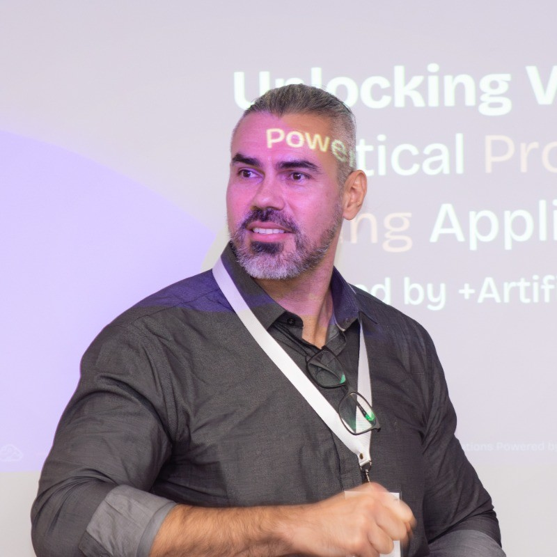

Call for Papers: Artificial Intelligence for Process Mining
AI4PM 2026 workshop at ECML PKDD 2026. A full-day workshop exploring the convergence between Artificial Intelligence and Process Mining.
Workshop Scope
Forum for researchers and practitioners interested in AI-enabled Process Mining.
Process-aware information systems generate event data about activities, resources, timestamps, and costs. Process Mining has emerged to extract insights from these logs, while AI and Machine Learning are increasingly shaping predictive monitoring, model discovery, conformance checking, and decision support.
AI4PM 2026 brings together advances and applications across domains such as healthcare, finance, maintenance, and tourism, combining paper presentations with discussion and invited talks.
- Format: Full-day workshop
- Expected submissions: 20-30
- Presentation: 20 minutes per paper
- Submission platform: Microsoft CMT
- Style: Springer LNCS
Topics of Interest
- Predictive Process Monitoring
- Machine Learning and Deep Learning for Process Mining
- Stream Mining for Online Process Environments
- Anomaly Detection for Process Mining
- NLP and Text Mining for Process Mining
- Large Language Models to Interface Process Mining
- Multi-perspective Analysis of Processes
- AI in Object-centric Process Mining
- AI for Robotic Process Automation
- Automated Process Modelling and Updating
- AI-based Conformance Checking
- Transfer Learning for Business Processes
- Classification and Clustering of Business Processes
- IoT Business Services Leveraged by AI
- Multidimensional Process Mining
- Prescriptive Learning in Process Mining
- Right to Explanation in Process Mining
Submission Guidelines
Accepted Formats
- Regular research papers: up to 12 pages including references.
- Short research statements: up to 6 pages including references.
Requirements
- PDF submission via Microsoft CMT.
- English language, conference template required.
- Springer LNCS style.
- Templates: Springer LNCS Guidelines
Important Dates
Deadline, notification, and camera-ready dates will follow the official ECML PKDD 2026 workshop timeline.
Organizing Committee
Annalisa Appice
University of Bari Aldo Moro, Italy

Sylvio Barbon Junior
Università degli Studi di Trieste, Italy
Paolo Ceravolo
Università degli Studi di Milano, Italy
Gabriel Marques Tavares
Ludwig-Maximilians-Universität München, Germany